A brain game web app to check, protect and train memory
Students: ______________________Course: ______________________Date: November 2026
1. About this document
This document has the materials that we made in the workshop session. There are four parts: the need statement, the personas, the competitor analysis and the prototype screenshots. The references are at the end.
aivOavi is a free web app. It helps people check their memory, keep their brain strong and practise every day. It works in a normal web browser. All data stays on the device of the user. aivOavi is not a medical test, and it cannot diagnose dementia.
2. Need statement
2.1 The problem
In 2021, approximately 57 million people in the world had dementia. Every year there are approximately 10 million new cases [1].
Approximately 75% of people with dementia do not have a diagnosis. In low-income countries, this can be up to 90% [2].
People can lower their risk. The Lancet Commission found 14 risk factors that people can change. If we remove them, approximately 45% of cases can possibly be prevented or delayed [3]. Two large trials also show a small benefit from training and a healthy lifestyle [4], [5].
The tools that people can use today have problems. Many cost money every month. Many are not made for people with early dementia. Some make claims that science does not support. In 2016, the maker of Lumosity paid $2 million to settle deceptive advertising charges from the US FTC [6], [7].
2.2 The need
People who are worried about their memory, healthy people who want to protect their brain, and people with early dementia need one tool that is free, private and easy to use. The tool must help them check their memory, practise every day and see changes early. It must also tell them clearly when to speak to a doctor.
2.3 How aivOavi answers the need, and its limits
A Brain Check-up every 4 weeks, and a trend line that turns orange when scores stay low.
Three short games every day, with a garden, badges and levels.
Easy mode for people with dementia: one big button, large text, no timers.
No account and no server. The data is encrypted on the device.
Limit: the check-up is not clinically validated. It does not replace a doctor.
Limit: nobody has proved that these games prevent dementia [6].
3. Personas
We made five personas. Three of them use the app directly. The caregiver and the doctor get help from the app in a different way. The personas are examples, not real people.
Persona
Goal
Problem today
How aivOavi helps
Sam, 66 The Checker
Find out if the memory is changing.
Sam forgets names and is worried. Sam is not ready to see a doctor yet.
An 8-minute check-up with a clear green or orange result. A summary to print for the doctor.
Rosa, 54 The Preventer
Keep the brain strong with a short daily habit.
Rosa is healthy but has a family history of dementia. Rosa has little free time.
Three short games each day. Levels, a streak and a garden keep Rosa motivated. The trend shows early changes.
Joe, 78 The Trainee
Practise every day without stress.
Joe has early dementia. Most apps have small text, many buttons and timers.
Easy mode: one big button, "Start here" and "You are finished" markers, read aloud, and no "wrong" answers.
Priya, 45 The Caregiver
Help Joe from a distance.
Priya does not know if Joe practises or if things change.
A caregiver area with a PIN, detailed progress, a locked backup and the doctor summary.
Dr. Mensah The Reader
Make a good decision about a memory test.
One short visit shows only one result.
A printed summary with results from many weeks at home.
4. Competitor analysis
We compared aivOavi with six products: three brain-training apps, one app for training and testing, and two screening tests. We took the facts from the product pages and app store pages in November 2026 [8]–[13]. Prices can change.
Product
Type
Cost
Memory screening
Daily training
Mode for dementia
No account, data on device
aivOavi
Web app
Free
✔
✔
✔
✔
Lumosity [10]
Phone app, website
Free basic; paid premium
✘
✔
?
?
BrainHQ [8]
Phone app, website
$14 a month or $96 a year
✘
✔
?
?
Elevate [11]
Phone app
Free basic; paid subscription
✘
✔
?
?
CogniFit [9]
Phone app, website
Paid plans; assessment sold separately
✔ (paid)
✔
?
?
SAGE test [12]
Paper test
Free for personal clinical use
✔
✘
✘
✔ (paper)
BrainCheck [13]
Test for clinics
Sold to clinics
✔
✘
✘
✘
✔ = yes · ✘ = no · ? = we did not find this information (it does not mean "no").
4.1 Strengths of the competitors
BrainHQ has the strongest evidence. Its speed exercise comes from the ACTIVE trial [5].
SAGE is free and simple, and it is studied by Ohio State University [12].
BrainCheck is made for doctors and clinics [13].
4.2 Weaknesses of the competitors
Most training apps need a paid plan for all functions.
Training apps do not include a regular check-up, except CogniFit (paid).
Screening tests do not include daily training.
4.3 The gap that aivOavi fills
No other product in this comparison has all of these together: it is free, it has a check-up and daily training and a trend, it has a special mode for people with dementia, and it keeps all data on the device.
4.4 Risks for aivOavi
aivOavi has no clinical evidence yet.
It must not claim that it prevents or diagnoses dementia. The FTC case shows this risk [7].
It has no income. It needs a funding plan, for example a grant.
4.5 How the parts connect
The four parts of this work follow one line. The need statement shows the problem: many people have memory problems, but few get help early. The personas show who has this problem and what each person needs. The competitor analysis shows that no current product covers all these needs together. The prototype in section 5 shows our answer: one simple app that tells each user where to start and when to stop.
5. Prototype screenshots
The prototype is a working web app. The pictures show the main screens on a phone, in the order a user sees them. The app tells the user where to start ("▼ Start here") and when to stop ("■ You are finished for today").
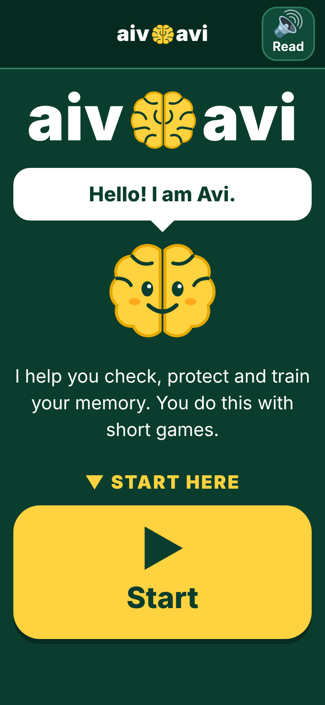
Fig. 1 Welcome and "Start here"
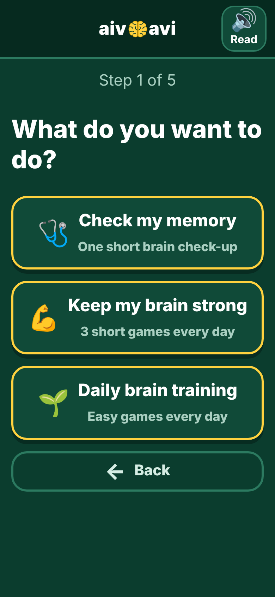
Fig. 2 Choose a path (step 1 of 5)
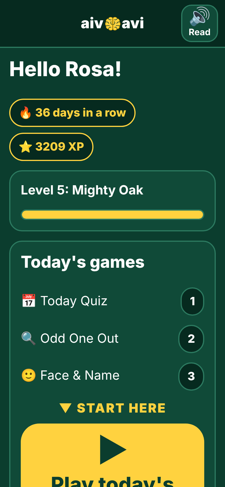
Fig. 3 Home with today's 3 games
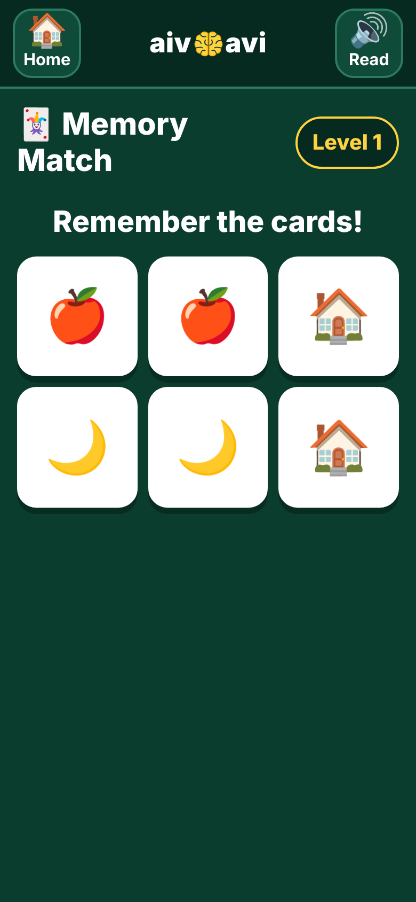
Fig. 4 Game: Memory Match
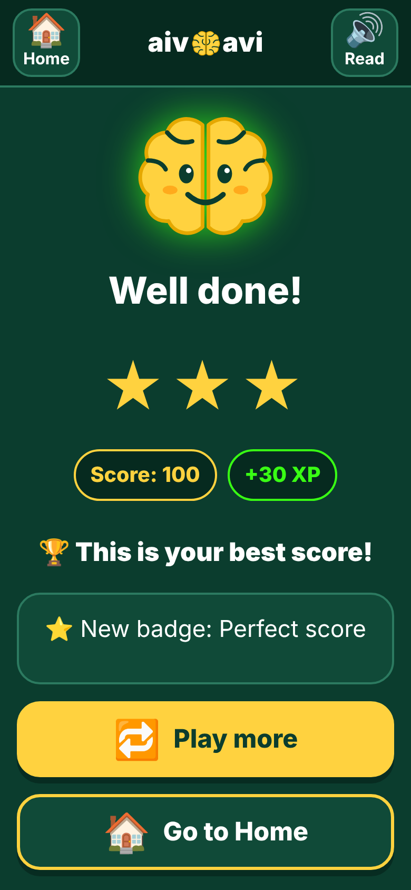
Fig. 5 Result with stars and points
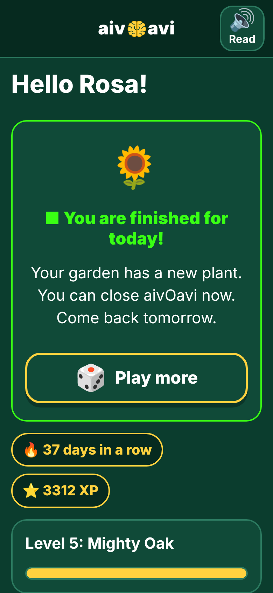
Fig. 6 End: "You are finished for today"
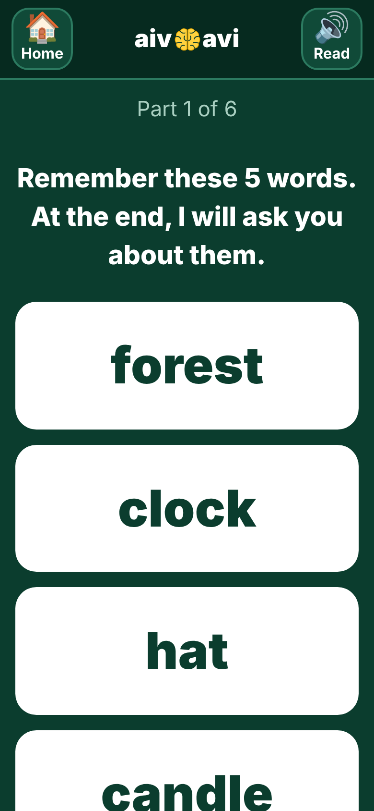
Fig. 7 Check-up, part 1: remember 5 words
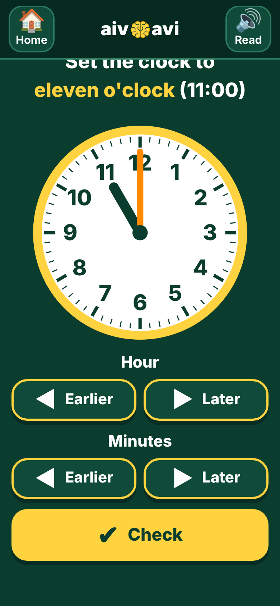
Fig. 8 Check-up, part 4: set the clock
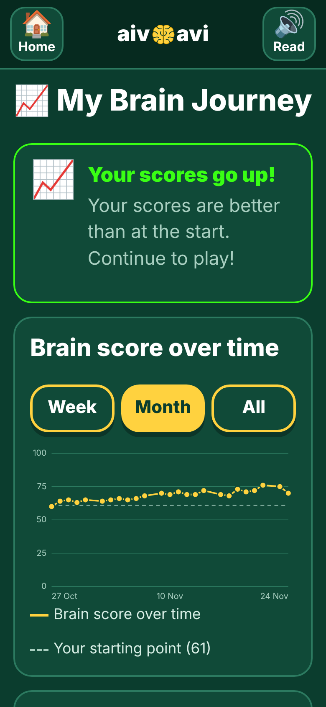
Fig. 9 Progress: green, all OK
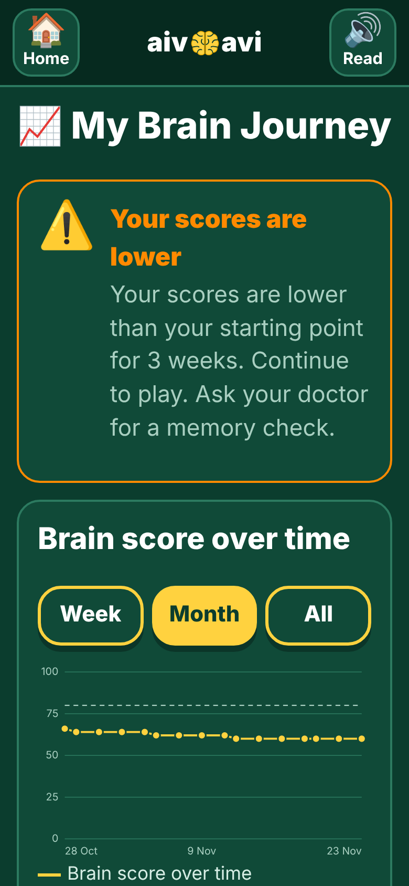
Fig. 10 Progress: orange warning
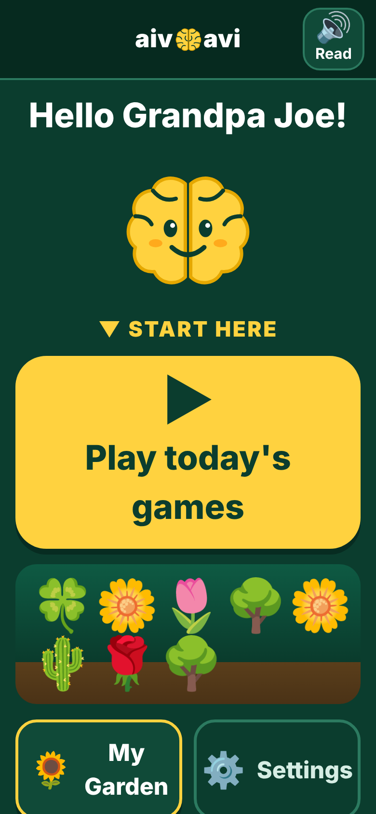
Fig. 11 Easy mode for Joe
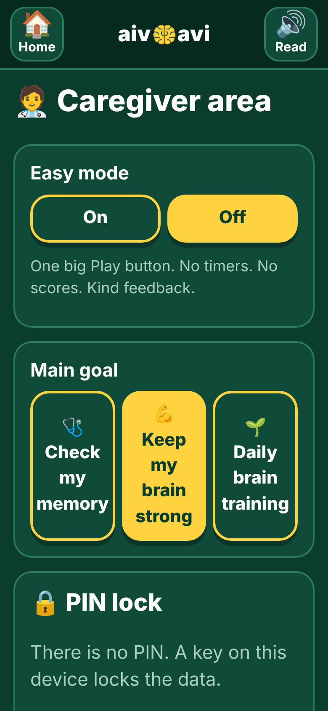
Fig. 12 Caregiver area for Priya
6. References
World Health Organization. (n.d.). Dementia [Fact sheet]. Retrieved November 2026, from https://www.who.int/news-room/fact-sheets/detail/dementia
Alzheimer's Disease International. (2021). World Alzheimer Report 2021: Journey through the diagnosis of dementia. https://www.alzint.org/news-events/news/over-41-million-cases-of-dementia-go-undiagnosed-across-the-globe-world-alzheimer-report-reveals/
Livingston, G., Huntley, J., Liu, K. Y., et al. (2024). Dementia prevention, intervention, and care: 2024 report of the Lancet standing Commission. The Lancet, 404(10452), 572–628. https://doi.org/10.1016/S0140-6736(24)01296-0
Ngandu, T., Lehtisalo, J., Solomon, A., et al. (2015). A 2 year multidomain intervention of diet, exercise, cognitive training, and vascular risk monitoring versus control to prevent cognitive decline in at-risk elderly people (FINGER). The Lancet, 385, 2255–2263. https://pubmed.ncbi.nlm.nih.gov/25771249/
Edwards, J. D., Xu, H., Clark, D. O., et al. (2017). Speed of processing training results in lower risk of dementia. Alzheimer's & Dementia: Translational Research & Clinical Interventions, 3(4), 603–611. https://doi.org/10.1016/j.trci.2017.09.002
Simons, D. J., Boot, W. R., Charness, N., et al. (2016). Do "brain-training" programs work? Psychological Science in the Public Interest, 17(3), 103–186. https://doi.org/10.1177/1529100616661983
US Federal Trade Commission. (2016, January 5). Lumosity to pay $2 million to settle FTC deceptive advertising charges for its "brain training" program [Press release]. https://www.ftc.gov/news-events/press-releases/2016/01/lumosity-pay-2-million-settle-ftc-deceptive-advertising-charges
BrainHQ. (n.d.). Choosing a personal subscription plan. Retrieved November 2026, from https://support.brainhq.com/hc/en-us/articles/115002103266-Choosing-a-personal-subscription-plan
CogniFit. (n.d.). CogniFit – Brain Training [Mobile app]. App Store. Retrieved November 2026, from https://apps.apple.com/app/id528285610
Lumos Labs. (n.d.). Lumosity: Brain Training Games [Mobile app]. App Store. Retrieved November 2026, from https://apps.apple.com/us/app/lumosity-brain-training-games/id577232024
Elevate Labs. (n.d.). Elevate – Brain Training Games [Mobile app]. App Store. Retrieved November 2026, from https://apps.apple.com/us/app/id875063456
The Ohio State University Wexner Medical Center. (n.d.). SAGE: Self-Administered Gerocognitive Examination. Retrieved November 2026, from https://wexnermedical.osu.edu/brain-spine-neuro/memory-disorders/sage
BrainCheck. (n.d.). BrainCheck Assess. Retrieved November 2026, from https://braincheck.com/platform/assess
Note on language: English is not our native language. We used AI to help our English sound polished.